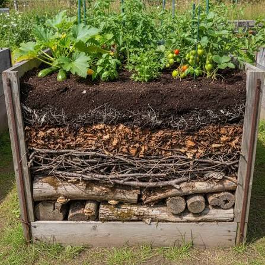

هوگلكولتور في العراق: كيف نحقق أقصى استفادة من تقنية الأحواض الخشبية المدفونة Hugelkultur in Iraq: Making the Most of the Buried Wood Bed Technique
٢٥ تموز، ٢٠٢٦July 25, 2026
حفرة هوگلكولتور مدفونة أثناء التحضير — طبقات من الأخشاب والمواد العضوية أسفل التربة
A buried Hugelkultur pit being prepared — layers of wood and organic matter beneath the soil
أصل الطريقة وجذورها التاريخيةThe Method's Origins and Historical Roots
كلمة Hügelkultur ألمانية الأصل، وتعني حرفيًا "زراعة التلال" أو "ثقافة الكومة" (Hügel = تلة/كومة، Kultur = زراعة أو ثقافة). ورغم أن المصطلح نفسه لم يُنشر رسميًا إلا عام 1962 في كتيب بستنة ألماني للكاتب هيرمان أندريه، فإن الممارسة الفعلية أقدم من ذلك بكثير، وتعود جذورها إلى ألمانيا وأوروبا الشرقية، حيث استُخدمت لقرون كطريقة تقليدية توارثها الفلاحون شفهيًا جيلًا بعد جيل.
The word Hügelkultur is of German origin, literally meaning "mound culture" or "hill cultivation" (Hügel = mound/hill, Kultur = cultivation or culture). Although the term itself was not formally published until 1962, in a German gardening booklet by author Hermann Andrä, the actual practice is far older, with roots in Germany and Eastern Europe, where it was used for centuries as a traditional method passed down orally from generation to generation.
من أوضح الشواهد التاريخية على هذه الممارسة وثيقة تعود إلى عام 1510 ميلادي من بولندا (ضمن ما يُعرف بـ"مخطوطة كوبرنيكوس")، تصف كيف واجه فلاحو الأراضي المستنقعية مشكلة تشبّع التربة بالمياه وعجزها عن دعم الزراعة. فلجأوا إلى تكديس جذوع الأشجار المقطوعة فوق سطح الأرض المشبعة، ثم غطّوها بطبقة من الطين والتربة العضوية. النتيجة كانت مفاجئة: أراضٍ لم تُنبت شيئًا من قبل أصبحت تنتج محاصيل جذرية كالبنجر والبصل والفجل واللفت، بمعدل قد يصل إلى ستة حصادات في السنة الواحدة عند توفر الظروف المناسبة.
One of the clearest historical pieces of evidence for this practice is a document dating to 1510 from Poland (part of what is known as the "Copernicus manuscript"), describing how farmers on waterlogged land faced soil saturation that prevented cultivation. They resorted to stacking felled tree trunks on top of the saturated ground, then covering them with a layer of clay and organic soil. The result was surprising: land that had never grown anything before began producing root crops such as beets, onions, radishes, and turnips, at a rate reaching up to six harvests a year under favorable conditions.
لماذا استخدمها الفلاحون في العصور الوسطى تحديدًا؟ الأسباب الرئيسية كانت: إدارة الأراضي الرديئة أو المشبعة بالمياه، إذ كانت جذوع الأخشاب المدفونة ترفع منسوب الجذور عن الماء الراكد وتحسّن الصرف؛ والتخلص من مخلفات قطع الأشجار عند تنظيف الأراضي الزراعية؛ وندرة وسائل الري المنظّم آنذاك، ما جعل الحاجة ماسّة لأسلوب يقلل الاعتماد على سقي متكرر يدوي؛ وتحسين خصوبة التربة دون أسمدة كيميائية، إذ كان تحلل الخشب والمواد العضوية المصدر الوحيد لتجديد خصوبة التربة تدريجيًا.
Why did medieval farmers use this method specifically? The main reasons were: managing poor or waterlogged land, since buried wood trunks raised the root zone above stagnant water and improved drainage; disposing of tree-felling waste when clearing agricultural land; the scarcity of organized irrigation systems at the time, creating an urgent need for a method that reduced reliance on repeated manual watering; and improving soil fertility without chemical fertilizers, since the decomposition of wood and organic matter was the only source for gradually renewing soil fertility.
من المفيد الإشارة إلى أن بعض الباحثين المعاصرين في تاريخ الزراعة يشككون بوجود توثيق كتابي وفير للممارسة في العصور الوسطى بحد ذاتها (بخلاف وثيقة 1510 البولندية)، ويرجّحون أنها انتقلت بشكل رئيسي عبر التقليد الشفهي بين الفلاحين الذين لم يكونوا يجيدون الكتابة غالبًا، وهو ما يفسّر ندرة المصادر المكتوبة قبل القرن العشرين رغم قدم الممارسة الفعلية.
It is worth noting that some contemporary researchers in agricultural history question whether abundant written documentation of the practice exists for the medieval period itself (aside from the 1510 Polish document), and suggest it was passed down primarily through oral tradition among farmers who were often not literate — which explains the scarcity of written sources before the twentieth century despite the practice's actual antiquity.
لماذا تناسب هذه الطريقة مناخ العراق تحديدًا؟Why This Method Suits Iraq's Climate Specifically
مناخ العراق الحار الجاف وشبه الجاف، مع صيف طويل يتجاوز فيه البخر معدلات الهطول بأضعاف، يجعل من "هوگلكولتور" أداة ذات قيمة عالية بشكل خاص، لكنها تحتاج تعديلات عن النسخة الأوروبية الأصلية لتُبنى فوق سطح الأرض بالكامل. النسخة الأنسب للعراق هي النسخة المدفونة أو الغاطسة جزئيًا (Sunken Hugelkultur)، حيث يُحفر خندق أو حفرة بدل بناء كومة مكشوفة، وذلك لتقليل مساحة السطح المعرّضة مباشرة للشمس والرياح الحارة وبالتالي تقليل التبخر من الطبقة العضوية نفسها، وللاستفادة من العزل الحراري الذي توفره التربة المحيطة بالحفرة، ما يبقي الرطوبة والميكروبات النشطة في بيئة أكثر استقرارًا حراريًا، إضافة إلى تقليل الحاجة لريّ إضافي في مرحلة التأسيس، وهي المرحلة الأكثر حساسية.
Iraq's hot, arid, and semi-arid climate, with a long summer in which evaporation far exceeds rainfall, makes Hugelkultur a particularly valuable tool — though it requires modifications from the original European version, which is built entirely above ground. The version best suited to Iraq is the sunken or partially submerged version, where a trench or pit is dug instead of building an exposed mound. This reduces the surface area directly exposed to sun and hot wind, thereby reducing evaporation from the organic layer itself; takes advantage of the thermal insulation provided by the surrounding soil, keeping moisture and active microbes in a more thermally stable environment; and reduces the need for additional irrigation during the establishment phase, the most sensitive stage.
كيفية التطبيق الأمثل للأشجار المتباعدة في العراقOptimal Application for Spaced Trees in Iraq
عند التعامل مع أشجار مثمرة أو معمّرة متباعدة (بدل أحواض الخضروات المتلاصقة)، الأسلوب الأنسب هو حفرة واحدة واسعة لكل شجرة، تُبنى على النحو التالي: حفر حفرة واسعة وعميقة نسبيًا (يُفضّل 60 إلى 100 سم عمقًا حسب حجم الشجرة المستقبلية)، مع الاحتفاظ بالتربة السطحية الأصلية جانبًا لإعادة استخدامها لاحقًا؛ ثم قاعدة من جذوع وأغصان خشبية كبيرة يُفضّل أن تكون متحللة جزئيًا مسبقًا إن أمكن؛ فطبقة وسطى من أغصان أصغر وأوراق شجر جافة تملأ الفراغات بين الجذوع الكبيرة؛ فطبقة موازنة نيتروجينية من أوراق شجر خضراء طازجة أو بقايا مطبخ نباتية أو سماد حيواني أو كومبوست، لتعويض النيتروجين الذي تستهلكه الكائنات المحللة أثناء تكسير الخشب؛ وأخيرًا إرجاع التربة الأصلية فوق الطبقات، ثم غرس الشتلة فيها مباشرة.
When dealing with spaced fruit or perennial trees (rather than adjoining vegetable beds), the most suitable approach is a single, wide pit per tree, built as follows: dig a relatively wide and deep pit (60 to 100 cm deep is preferable, depending on the tree's future size), setting the original topsoil aside for later reuse; then a base of large wooden logs and branches, ideally partially decomposed beforehand if possible; a middle layer of smaller branches and dry leaves filling the gaps between the large logs; a nitrogen-balancing layer of fresh green leaves, plant kitchen scraps, animal manure, or compost, to offset the nitrogen consumed by decomposing organisms as they break down the wood; and finally, returning the original soil over the layers before planting the sapling directly into it.
يجب تجنّب أخشاب بعض الأنواع ذات المركّبات المثبّطة لنمو النبات (مثل الجوز الأسود)، والأخشاب شديدة المقاومة للتحلل أو الراتنجية كأخشاب الصنوبريات الخضراء، لأنها تبطئ العملية وتستهلك نيتروجين أكبر دون فائدة تُذكر في المدى القريب.
Wood from species containing plant-growth-inhibiting compounds (such as black walnut) should be avoided, as should wood highly resistant to decomposition or resinous woods like green conifer wood, as these slow the process and consume more nitrogen without notable near-term benefit.
لماذا يجب نقع الأغصان وأوراق الشجر قبل الاستخدام؟Why Branches and Leaves Must Be Soaked Before Use
هذه خطوة كثيرًا ما يتم تجاهلها، لكنها بالغة الأهمية في نجاح الطريقة، خصوصًا عند استخدام أخشاب جافة تمامًا (وهو الحال الغالب في العراق). الخشب الجاف تمامًا يتصرف كإسفنجة فارغة تمامًا من الماء، فإذا دُفن في التربة وهو جاف، فإن أول ما يفعله هو امتصاص الرطوبة من التربة المحيطة به وليس إمدادها بها؛ أي أنه يسحب الماء من التربة والجذور النباتية القريبة بدلًا من أن يكون مصدرًا للرطوبة، وهذا عكس الهدف المرجو تمامًا في المراحل الأولى.
This is a step often overlooked, yet it is critical to the method's success, especially when using completely dry wood (the prevailing case in Iraq). Completely dry wood behaves like a sponge entirely empty of water: if buried in the soil while dry, the first thing it does is absorb moisture from the surrounding soil rather than supply it — pulling water away from the soil and nearby plant roots instead of being a source of moisture, which is the exact opposite of the intended goal in the early stages.
لهذا السبب، يُنصح بنقع الأغصان وأوراق الشجر في الماء لفترة (من عدة ساعات إلى يوم أو يومين حسب سُمك الخشب وجفافه) قبل دفنها في الحفرة. هذا النقع يحقق عدة أهداف: إشباع الخشب بالماء مسبقًا، بحيث يبدأ دوره الحقيقي كخزان ماء منذ اليوم الأول بدل أن يكون منافسًا للنبات على الرطوبة في أول أسابيع حرجة؛ وتنشيط بداية التحلل، إذ الرطوبة تُنشّط الفطريات والبكتيريا المحللة للخشب مبكرًا فتبدأ عملية إطلاق العناصر الغذائية بشكل أسرع؛ وتقليل خطر "سرقة النيتروجين" الحادة في الأسابيع الأولى، لأن الكائنات الدقيقة التي تستهلك النيتروجين أثناء تحلل الخشب تكون أكثر نشاطًا حين يكون الخشب رطبًا أصلًا، فتتوزع العملية بشكل أكثر توازنًا مع الوقت بدل أن تحدث دفعة استهلاك مفاجئة تستنزف التربة القريبة من الجذور الفتية.
For this reason, it is recommended to soak the branches and leaves in water for a period (from several hours to a day or two, depending on the wood's thickness and dryness) before burying them in the pit. This soaking achieves several goals: pre-saturating the wood with water, so its true role as a water reservoir begins from day one instead of it competing with the plant for moisture during the critical first weeks; activating early decomposition, as moisture activates wood-decomposing fungi and bacteria early on, speeding up the release of nutrients; and reducing the risk of acute "nitrogen theft" in the first weeks, since the microorganisms consuming nitrogen during wood decomposition are more active when the wood is already moist, spreading the process more evenly over time instead of a sudden consumption spike that depletes soil near the young roots.
كيف تقلل هذه الطريقة استهلاك الشجرة للمياه على المدى الطويل؟How This Method Reduces a Tree's Long-Term Water Consumption
الأثر الأكبر لهذه الطريقة في بيئة كالعراق يظهر تدريجيًا مع مرور المواسم، ويعمل عبر عدة آليات مجتمعة. أولًا، خزان رطوبة تحت الأرض بعيد عن التبخر: الخشب المدفون على عمق يبعده عن أشعة الشمس المباشرة والرياح الحارة يحتفظ بالماء لفترات أطول بكثير من التربة السطحية العادية، لأن التبخر السطحي لا يصل إليه بنفس الشدة، فالماء الذي تُسقيه الشجرة لا يضيع بسرعة بل يُخزَّن فعليًا في طبقة الخشب المتحلل تدريجيًا.
This method's greatest impact in an environment like Iraq's emerges gradually across seasons, working through several combined mechanisms. First, an underground moisture reservoir far from evaporation: wood buried at a depth away from direct sunlight and hot wind retains water for far longer than ordinary surface soil, since surface evaporation does not reach it with the same intensity — the water given to the tree is not quickly lost but is effectively stored in the gradually decomposing wood layer.
ثانيًا، إطلاق تدريجي بطيء للرطوبة عند الحاجة: كلما جفّت التربة المحيطة قليلًا، يبدأ الخشب المتحلل بإطلاق جزء من رطوبته المخزّنة نحو الجذور المجاورة، بحيث تعمل الحفرة كنظام ري ذاتي بطيء يستمر لسنوات (غالبًا ما بين 5 إلى 20 عامًا حسب نوع الخشب وسمكه، إذ الجذوع الكبيرة تدوم أطول من الأغصان الرفيعة). ثالثًا، تحسين بنية التربة وقدرتها على الاحتفاظ بالماء، إذ مع تحلل الخشب تدريجيًا تتشكل فراغات ومسام دقيقة تُحسّن تهوية التربة وقدرتها الكلية على امتصاص كميات ماء أكبر عند الري أو الأمطار، بدل أن يجري الماء سطحيًا ويُفقد. رابعًا، تقليل تكرار الري المطلوب، إذ تحتاج الشجرة ريًا أقل تكرارًا مقارنة بشجرة مزروعة في حفرة تربة عادية، خصوصًا بعد السنة الثانية أو الثالثة حين تكون عملية التحلل والتخزين قد استقرت.
Second, a slow, gradual release of moisture as needed: as the surrounding soil dries out slightly, the decomposing wood begins releasing part of its stored moisture toward nearby roots, so the pit functions as a slow self-irrigation system lasting for years (typically 5 to 20 years depending on wood type and thickness, as large trunks last longer than thin branches). Third, improved soil structure and water-retention capacity: as the wood gradually decomposes, fine cavities and pores form, improving soil aeration and its overall ability to absorb larger amounts of water during irrigation or rainfall, instead of water running off the surface and being lost. Fourth, reduced irrigation frequency: the tree needs watering less often compared to a tree planted in an ordinary soil pit, especially after the second or third year, once the decomposition and storage process has stabilized.
خلاصة عملية للتطبيق في العراقA Practical Summary for Application in Iraq
اختر حفرة واسعة لكل شجرة بدل كومة مكشوفة فوق السطح. انقع الأغصان وأوراق الشجر الجافة في الماء قبل الدفن بيوم أو يومين على الأقل. رتّب الطبقات من الأخشاب الكبيرة في القاع، مرورًا بالأغصان الصغيرة والأوراق، وصولًا للمواد الخضراء والسماد، ثم التربة الأصلية في الأعلى. تجنّب الأخشاب الراتنجية أو المثبّطة لنمو النبات. توقّع حاجة لريّ منتظم في السنة الأولى فقط، مع تراجع تدريجي في الحاجة للري كل موسم بعدها.
Choose a wide pit for each tree instead of an exposed above-ground mound. Soak dry branches and leaves in water for at least a day or two before burying them. Layer the materials with large logs at the bottom, followed by small branches and leaves, then green matter and compost, and finally the original soil on top. Avoid resinous or plant-growth-inhibiting woods. Expect the need for regular watering only in the first year, with a gradual decline in irrigation needs each season afterward.
بهذا الشكل، تتحول تقنية عصور وسطى بسيطة نشأت لحل مشكلة أراضٍ مشبعة بالمياه في أوروبا، إلى حل عملي لمشكلة معاكسة تمامًا: ندرة المياه في الأراضي الجافة كالعراق.
In this way, a simple medieval technique that originated to solve the problem of waterlogged land in Europe is transformed into a practical solution for an entirely opposite problem: water scarcity in arid lands like Iraq.